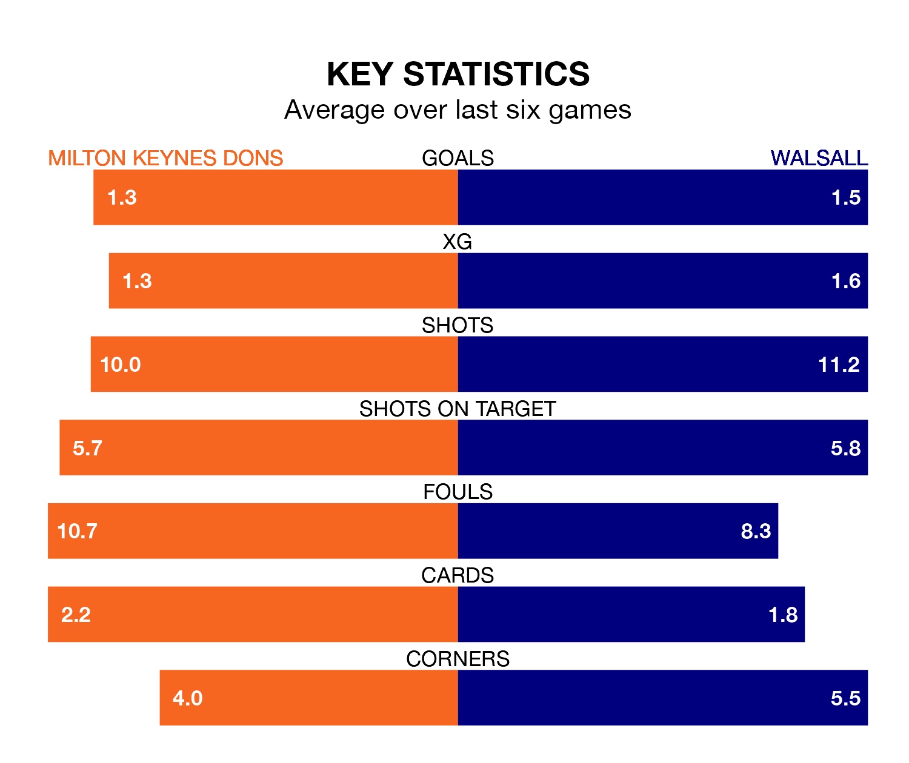

Milton Keynes Dons host Walsall in Friday's match at Stadium mk looking to bounce back from defeat last time out in EFL League Two.
The Dons, who sit fourth in the league after 40 games, fell to a 5-0 away defeat to Stockport County on March 23.
They face a Walsall side who secured a draw in their last match, a 1-1 tie with Colchester United, and who sit 10th in the table.
With 63 goals in 40 games so far this season, Milton Keynes are scoring more than average in the league with 1.6 goals per game. And they are conceding fewer than average, letting in 54 goals at a rate of 1.4 per game.
Walsall, meanwhile, are average scorers, with 1.5 goals per game. They have conceded 1.4 goals per game.
In the last 10 years, Milton Keynes and Walsall have played each other on eight occasions. They won two each, and they drew four times.
On average, the Dons scored 1.1 goals and the Saddlers 1.0 in those matches.
Their last meeting was on October 3, when they played out a 0-0 draw.
Dons' Alex Gilbey is among the league's most creative players, racking up nine assists in 40 appearances so far this season, and holding third spot in EFL League Two's assist charts.
For the Saddlers, Isaac Hutchinson has set up the most goals, having laid on eight assists in 38 games.
The Dons are in mixed form in EFL League Two, with three wins and three losses from their last six games.
With three wins and two draws over that period, the away team's form is slightly better – they have taken 11 points from 18, compared to the hosts' nine.
Updated: 12:39 (UTC), 26/03/24